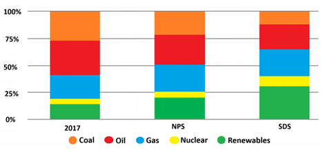
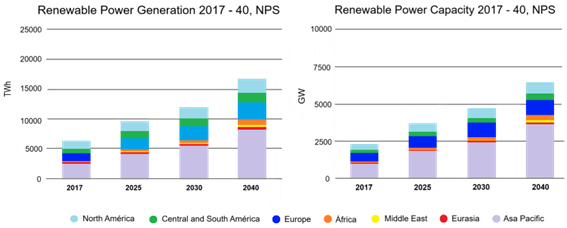
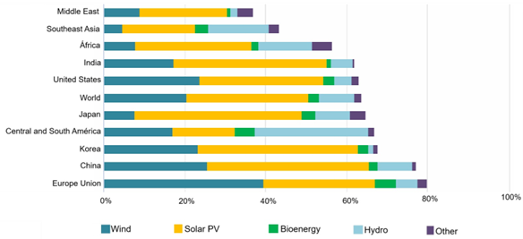
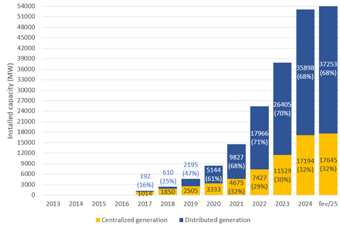

CAPÍTULO 3 PERSPECTIVAS ACERCA DO USO DAS RENOVÁVEIS NO CONTEXTO MUNDIAL E BRASILEIRO
Ao contrário do carvão ou do gás natural, o hidrogênio não é uma fonte primária de energia, mas sim um vetor energético que pode ser produzido utilizando sistemas energéticos tradicionais. Apesar de ser uma fonte de energia potencialmente renovável, esse combustível é frequentemente produzido a partir de fontes não renováveis, o que acaba prejudicando seu caráter sustentável. A longo prazo, para obter hidrogênio limpo e para que ele seja produzido em larga escala, é necessário recorrer a fontes renováveis de energia capazes de produzir esse combustível alternativo, entre as quais a energia solar (ou nuclear nos países que a consideram) vem recebendo atenção especial. Acredita-se também que, a curto e médio prazo, o melhor caminho para promover a penetração do hidrogênio de baixo carbono na matriz energética será contar com sua produção tanto a partir de energia eólica quanto solar fotovoltaica, visto que o mercado global de energia apresenta um crescimento contínuo no aproveitamento de fontes renováveis de energia.
Ao mesmo tempo, espera-se que os combustíveis fósseis e as fontes não renováveis declinem progressivamente. O atual contexto geopolítico global indica que, entre 2021 e 2022, o declínio projetado dos combustíveis fósseis desacelerou e até mesmo se reverteu, e prova disso é a reativação do consumo de carvão na Alemanha e de energia nuclear no Japão [8]. No entanto, essa tendência recente foi impulsionada principalmente pela invasão russa da Ucrânia, um cenário que não deve perdurar para sempre.
O aumento das energias renováveis e a consequente diminuição dos combustíveis fósseis permitirão que as emissões de gases de efeito estufa sejam gradualmente reduzidas, e regiões tão dependentes de combustíveis fósseis como a Europa se tornarão menos dependentes. Em última análise, a população deverá ter menos problemas de saúde causados pelos gases poluentes presentes na atmosfera, no solo e na água. Para analisar a tendência da matriz energética global nos próximos anos e verificar o impacto das energias renováveis, dois cenários podem ser apresentados de acordo com a literatura [9]:
Cenário de Novas Políticas (NPS) ou Cenário de Políticas Declaradas (STEP), que reflete o impacto das medidas e intenções políticas anunciadas até o momento, mostrando as consequências para o uso de energia, as emissões e a segurança energética no futuro. Ela mostra a direção que o atual arcabouço político terá sobre o setor energético em 2040 (Figura 3.1).
Cenário de Desenvolvimento Sustentável (SDS), que está totalmente alinhado com o Acordo de Paris e visa manter o aumento da temperatura média global abaixo de 2°C acima dos níveis pré-industriais e limitar o aumento da temperatura a 1,5°C acima dos níveis pré-industriais (Figura 3.1).

Figura 3.1: Percentagens de energia primária global em todo o mundo [10].
No cenário NPS, a geração de eletricidade a partir de fontes renováveis triplicaria até 2040 e representaria mais de 40% da geração total (Figura 3.2), e seria responsável por mais de 60% das adições brutas de capacidade até 2040 na maioria das regiões, atingindo metade da capacidade global de geração de energia até 2035. A energia solar fotovoltaica é uma das tecnologias de crescimento mais rápido e está projetada para se tornar a segunda maior capacidade instalada, ultrapassando a energia eólica nos próximos anos, a energia hidrelétrica em 15 anos e o carvão antes de 2040 [8, 10, 11].

Figura 3.2: Produção e capacidade de energia renovável de 2017 a 2040 por região [10].
Neste contexto, a China e a Índia estão a impulsionar o crescimento global da energia solar fotovoltaica; são responsáveis por mais de metade das adições globais de capacidade solar fotovoltaica, como pode ser visto na Figura 3.3 [1].

Figura 3.3: Percentagem de energia renovável na capacidade total de produção de energia por região, prevista para 2040. [8, 10]
A nível latino-americano, especificamente no nível brasileiro, considerando a Matriz Elétrica Brasileira, segundo dados da ABSOLAR [12] a geração hidrelétrica representa 44,5% enquanto a Solar FV é a segunda maior fonte geradora com 22,2% seguida pela eólica, gás natural e biomassa com 13,4%, 7,2% e 7,1%, respectivamente. Por outro lado, em relação à evolução da fonte solar FV no Brasil, até fevereiro de 2025, a potência instalada desta fonte, considerando tanto a geração distribuída (37.253 MW) quanto a geração centralizada (17.645 MW), atingiu um total geral de potência solar FV instalada de 54.898 MW. A Figura 3.4 mostra a evolução da fonte solar FV para o Brasil nos últimos 12 anos.

Figura 3.4: Evolução da energia solar fotovoltaica no Brasil nos últimos 12 anos [12]
Dentre os 26 estados brasileiros, o estado de Minas Gerais lidera o ranking em capacidade instalada em termos de geração centralizada, ou seja, usinas fotovoltaicas de grande porte que injetam energia elétrica na rede, com um total de 7.194 MW, seguido pelos estados da Bahia, Piauí e Ceará, que injetam 2.404, 2.097 e 1.256 MW, respectivamente. Por fim, em termos de capacidade instalada por estado, desta vez considerando a geração distribuída, o estado de Minas Gerais fica atrás apenas do estado de São Paulo, com uma geração de 4.609 MW para o estado de Minas Gerais e 5.371 MW para o estado de São Paulo [12].
3.1 O H₂ Verde no Contexto Brasileiro
Eletrólise da água, ciclos termoquímicos e processos de fotocatálise são alguns dos processos mais importantes, baseados em combustíveis não fósseis, para a produção de hidrogênio verde, também conhecido recentemente como H₂ de baixo carbono. Atualmente, as eficiências destes dois últimos são muito baixas, tornando-os economicamente pouco competitivos. No entanto, a decomposição eletrolítica da molécula de água é uma tecnologia cada vez mais viável para a produção de hidrogênio em larga escala, representando uma alternativa técnica e economicamente viável, desde que a energia utilizada seja proveniente de fontes renováveis, como a energia solar.
Assim, considerando o contexto energético global e o significativo potencial da energia solar fotovoltaica na América Latina, particularmente no estado de Minas Gerais, fica evidente o enorme potencial teórico para a geração de hidrogênio verde a partir da energia solar fotovoltaica em todos os 853 municípios do estado mineiro. Esta avaliação incorpora não apenas a disponibilidade de recursos solares, mas também aspectos técnicos, geográficos, hídricos e sociais, destacando Minas Gerais como um dos estados brasileiros com maior capacidade de geração solar e, consequentemente, um forte candidato à produção de hidrogênio de baixo carbono em larga escala.